管樂踩街秀
日期：04月22日（日）
地點：中壢中正公園
韓國龜尾市金烏工業高等學校
金烏工業高等學校管樂團於1973年建校時同時創立，歷史悠久，自從創團以來積極參與各種演奏活動，通過多種形式的演出，不僅增添校園生活，且透過在龜尾市舉辦的各種文化、體育儀式的演出，也為社區貢獻一份力量，主要參與過的活動有:道民體育大會、慶北地方演出比賽、全國技能大會、頒獎儀式、大韓民國管樂表演大會等多項活動。
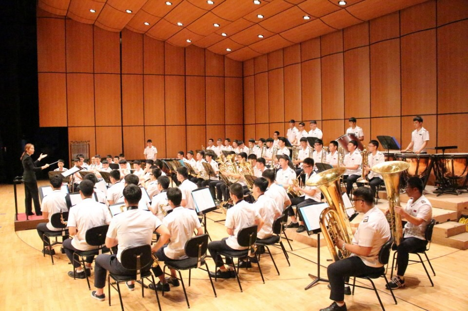
香港少青步操樂團
香港少青步操樂團成立於2003年，成立至今已逾十年。樂團曾多次參與海內及海外的大型演出及國際比賽；亦經常獲邀參與於香港舉辦的不同類型演出，樂團成立至今演出場次已逾500場。
2010年樂團前往泰國參與當地第一屆世界步操樂團錦標賽，獲得巡遊「銅牌獎」。此外，樂團更首度獲邀請於長州太平清醮中擔任表演嘉賓。同年，樂團繼2005及 2009年後，於香港步操及鼓號樂團協會主辦的「2010香港步操樂團公開賽」中再獲「金牌獎」。
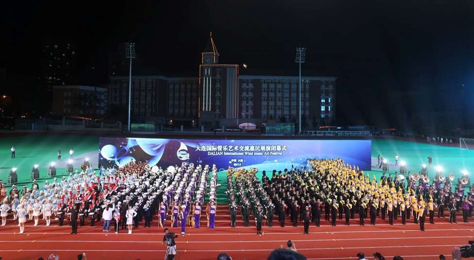
陸軍專科學校軍樂隊
本校鼓號樂旗隊創立於民國65年，挑選品學兼優、具責任感與榮譽心的學生所組成。由於同學們的表現極為優異，曾於國慶與其他重要活動中表演；表演的形式以千變萬化的隊形為亮點，需要高度的專注力、團隊默契，方能精準地呈現高水準的表演。
94年本校改制為「陸軍專科學校」後，依其表演型態實施整合成鼓號樂旗隊，全隊以「旗槍、銅管與打擊樂器」為主，是一支具有光榮傳統、歷史悠久的隊伍；曾參加國防知性之旅營區開放表演、桃園管樂嘉年華、西門踩街嘉年華、台灣燈會等各大型活動表演，深獲中外界好評。
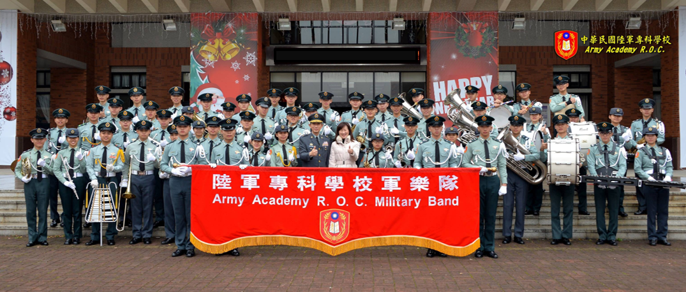
中壢高商行進樂隊
中壢高商管樂旗隊為張雲斐老師所指導。2009年成立壢商樂旗隊，加強壢商管樂隊表演的豐富性與完整性。2011年更打破學校傳統女子管樂制度，歡迎男生們加入，讓壢商管樂的陣容擁有不一樣的風貌。壢商樂旗隊採行進式樂旗隊，由管樂吹奏出氣勢磅礡的音樂並在場上做不同隊型的變化，旗隊多變的旗舞表演與音樂共舞，表現出對行進樂旗的熱誠。自2007年起至今，連續6年獲得「桃園縣學生音樂比賽-行進管樂優等」，並代表桃園縣參加全國音樂比賽，獲得「行進管樂優等」的佳績。曾受邀前往嘉義國際管樂節、台北樂儀旗舞嘉年華、桃園管樂節千人大合奏，參加各項音樂交流盛會。
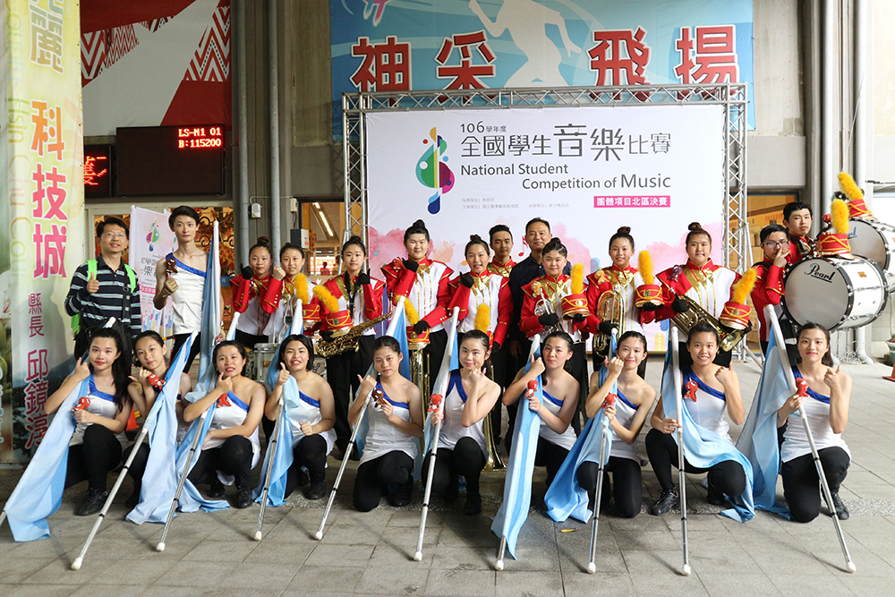
新興高中樂旗舞隊
新興高中樂旗舞隊成立於2004年，成立之初，為女子軍樂隊，2008年改制為樂旗隊。成立至今，除每年榮獲桃園縣音樂比賽優等外，並代表桃園縣參加全國音樂比賽，榮獲七次全國特優及2015年台灣國際行進管樂公開賽金獎的殊榮。新興高中樂旗隊除每年參加桃園市舉辦之管樂嘉年華踩街與定點表演，並多次獲邀參加嘉義國際管樂嘉年華的踩街定點表演，為桃園市至全國活動爭相邀請的表演團隊。
新興高中在校長魏宏恩先生宏觀的領導之下，大力推廣學生「德」、「智」、「體」、「群」、「美」五育的發展，學校除升學成績亮麗、繁星榮耀金榜外，社團發展也是在全國各競賽中閃耀的亮麗之星。新興高中魏宏恩校長並於民國百年榮獲教育部師鐸獎的榮耀，同時，新興高中亦榮獲教育部一等獎之最高榮耀。
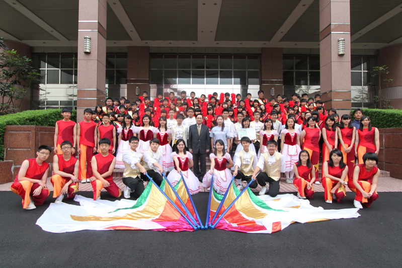
大華高中國中部管樂隊
大華高級中學管樂隊目前是以樂隊形式組成，主要成員由國中部學生為主，加上平日利用課餘時間努力練習，社員們如同家人一般，相互鼓勵扶持。在練習過程中，從一次又一次的錯誤學習，希望未來能朝向樂儀隊的形式發展。
以學長學弟制的技術傳承與各項訓練活動，對於每次表演盡心盡力，也為了嚴守大華中學校訓「做高山大樹，不做溫室小花」。並且在穿上大華管樂隊制服的瞬間，充滿自信心與榮譽心的表現是我們最好的證明。希望管樂每一位成員不僅能從中獲得更多的學習成長，並能將所學技能與優良的大華管樂隊之精神延續下去。
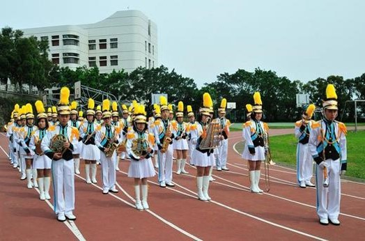
陽明高中管樂團
國立陽明高中管樂團創立於1993年，初以軍樂隊形式擔任學校司樂。而後逐漸轉為室內樂團，先後由林俊吉老師、曾凱宏老師、賴河泰老師、林希哲老師，2006年起由徐千惠老師所帶領至今。過往的二十年中，陽明管樂除了擔任校內的司月及活動演出外，也常受邀至校外演出。每年暑假固定舉行大型的年度音樂會，以「創新、用心」的精神，回饋社會。
在學校的支持、同學的熱情及學長姐的關懷下，歷年的全國學生音樂比賽中屢獲佳績，從1998年起至今，連續14年獲得高中職組第一名殊榮。
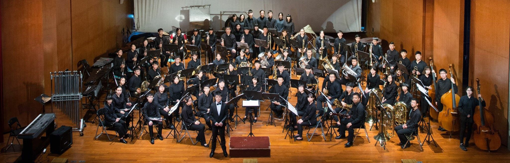
永豐高中管樂團暨儀隊
永豐高中儀隊，在學校師長支持與教官的協助下於103年創立。本社以糾察隊隊員為主體，以學習儀隊槍法、刀法，培養團隊在面對一件事情上堅忍不拔、揮灑汗水、同甘共苦、團結一致的精神及默契。良好的態度與虛心地向學為本儀隊最基本的要求，每位隊員應身為儀隊社一份子為榮，積極努力的自我要求且為學校爭取榮耀，在學校是同學的標竿，在課業上也要努力向上，讓永豐高中儀隊成為學校重要社團。
● 2014年8月18日 首次於校內演出於廣島學生參訪本校之歡迎會上重現桃儀盃的演出
● 2014年7月27日 第五屆桃儀盃 第11名首次參加桃儀盃 獲得第11名(成立第120天)
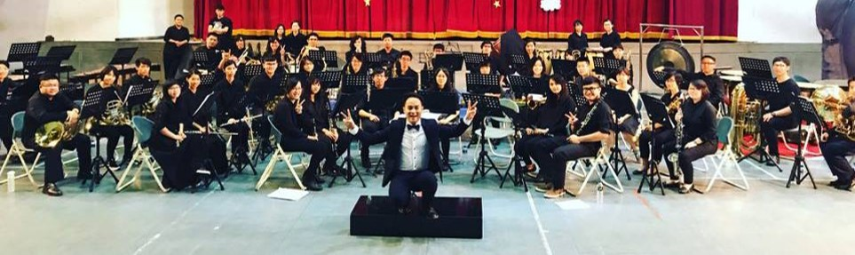
龜山國中管樂團
本校樂團成立於103年，在謝韋民團長以及劉可婕老師的帶領下日漸茁壯，每年均參加全市音樂競賽並獲得佳績，除了每週三下午的管樂課程外，經常參與各項展演活動以及校外服務，希望藉由本樂團的演出，讓大家更喜愛音樂。
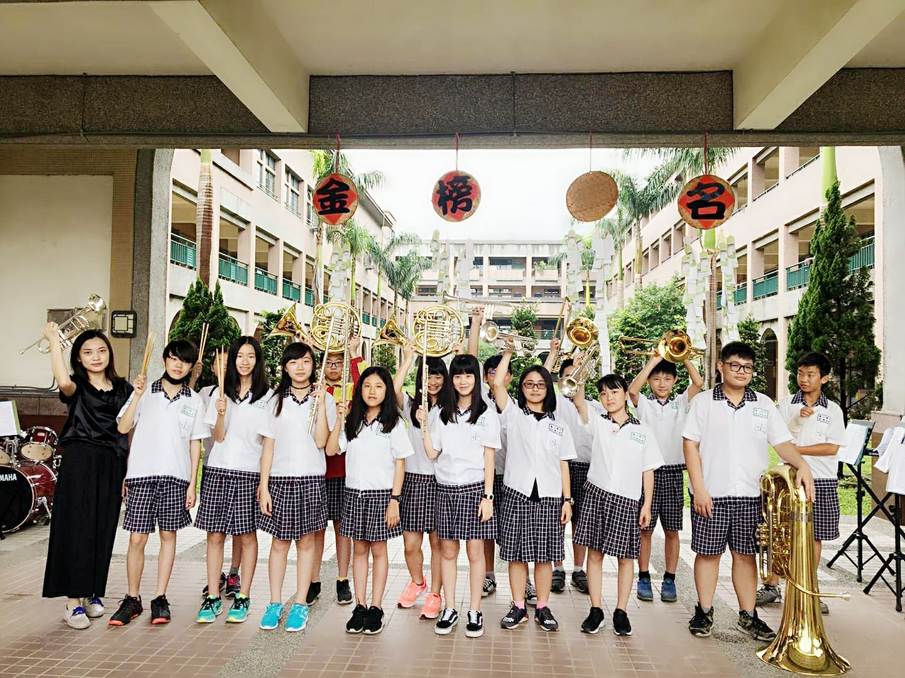
台北市金甌女中樂旗隊
金甌女中管樂隊是由一群熱愛樂器演奏的女孩們所組成，從民國80年成立至今，是金甌女中校隊型社團，近年來加入旗隊，旗隊成立至今也有5年的隊史，一直以來參與各項活動都有亮眼的表現。
臺北市私立金甌女中致力於培養學生的全球移動力及科技發展力，結合在地文化，在校內開設八國第二外語及文化課程，學生能在多元文化中薰陶成長。
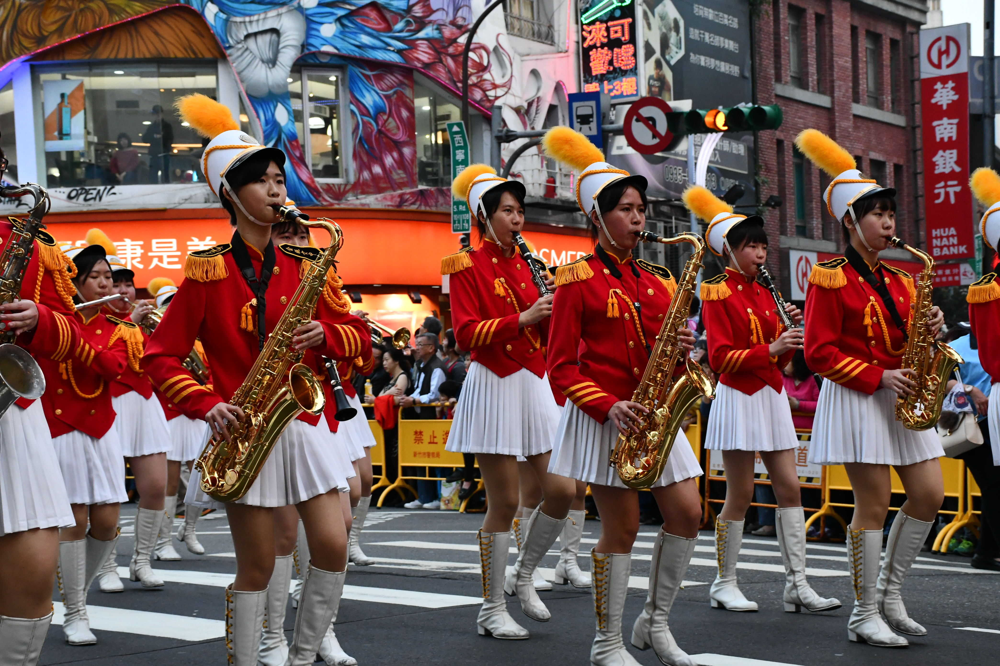
新北市能仁家商樂旗隊
新北市私立能仁家商樂旗隊成立於民國75年,在現在林佳生效長大力推展下,歷年來日漸成長茁壯,陣容也日益堅強,已成為新北市高中職樂團主幹之ㄧ。
本校樂旗隊曾多次擔任台北地區各動項慶典活動，亦應邀參加各高中國中校園校慶表演及社會公益團體演出，並自80學年度起參加每年的全國學生音樂比賽及社團展演，榮獲最高榮譽特優獎，深獲各界好評。
自民國77年起由羅光武教練開始致力於現代管樂新風格之導向,演奏曲目自古典到近代,到當代綽曲家專位管樂所編寫之作品,並於79年起加入旗隊,以活潑的隊形,曼妙的舞姿,亮麗的彩旗與樂隊一起呈現,為樂隊注入新生命,使能仁家商樂旗隊拓展了音樂領域,更充滿了多彩多姿的新氣象。
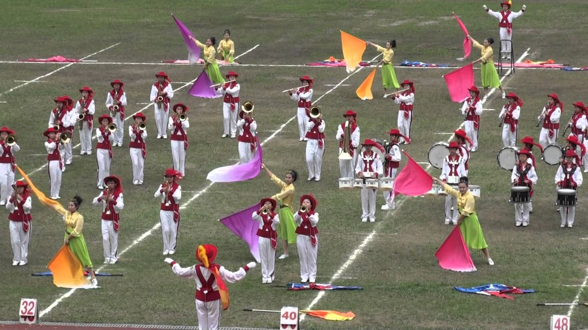
新竹竹光國中樂旗隊
這支成軍只有短短幾年的行進管樂團，同時也是新竹市目前唯一的行進管樂旗隊，其實都不是音樂班出身的學生，甚至絕大多數同學都未曾學過任何樂器，只要願意就可以參加行進管樂團。為了參加全國賽，更於去年九月招募旗隊，將行進管樂與旗舞完備到位，一共72位學生勇闖全國賽，同時成立家長繼續練習後援會，以家長的力量共同為孩子打造夢想舞台。目前樂團由竹光侯天玉老師，旗隊由黃嘉琪老師擔任指導老師，並特聘彭美齡老師擔任總指揮。
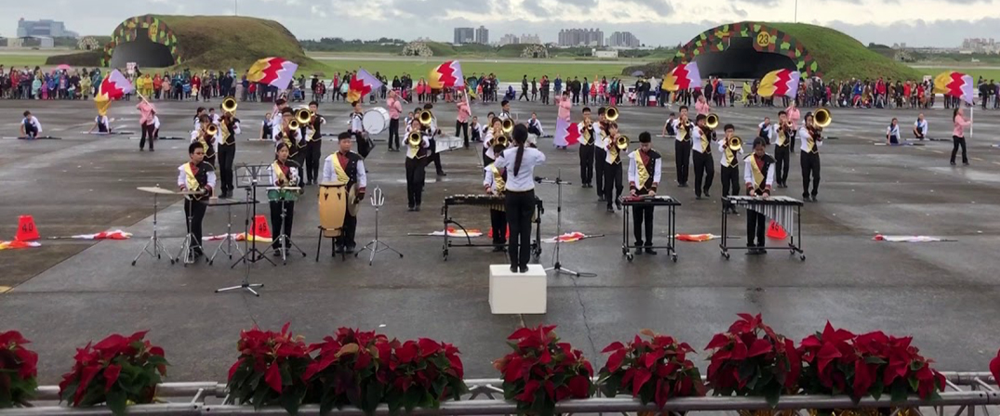
台中女中樂儀旗隊
中女管樂社成立於1955年，至今已屆60年，中女樂旗由一群充滿熱忱的音樂愛好者組成，每年由學姊學妹代代相傳，繼承中女最優良的傳統與精神。為配合時代潮流於1996年成立旗隊，並由管樂社改名為「樂旗隊」，使室外表演更趨生動活潑，更富動態之美。
樂旗大致上分為樂隊與旗隊。樂隊包括木管、銅管、打擊，而旗隊為求表演上的視覺效果，更包含旗、槍等道具。不同於其他管樂社，中女樂旗兼具室內與室外。大型室外表演，配合專業的行進技巧與隊形變化，充分呈現樂旗表演的藝術價值。
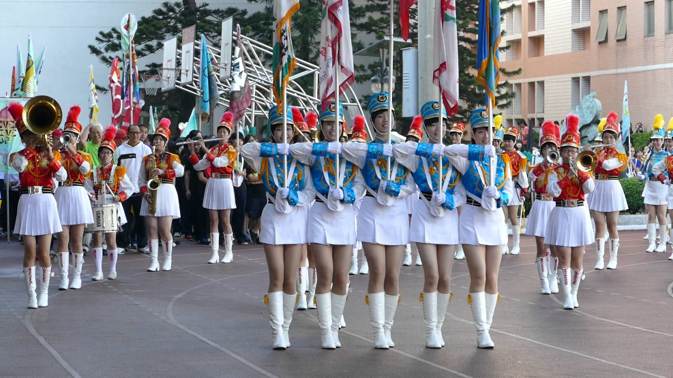
彰化和群國中室外樂旗隊
和群國中樂團發軔之初仍為傳統的典禮勤務樂隊；近年來，在學校師長規劃與地方人士的支持下，力求轉型為室外樂隊，並開始參與彰化縣市年度之內音樂比賽。為追求更臻於完善的表演設計和呈現，於2017年初招募旗隊成員，於106學年度以室外樂旗隊的編制參與音樂競賽與展演活動。樂旗隊的成員皆以常態編班中對樂旗表演藝術有興趣的同學報名參與，透過活動和比賽的參與，營造屬於和群樂旗的氣息，乃至彰化地區的校際樂旗展演團隊之一。目前由中台灣管樂常青樹黃茂村老師擔任音樂總監，青年指揮楊叔翰老師擔任樂團指揮，規劃與負責樂團的演訓工作。

國立員林崇實高工管樂隊
國立員林崇實高工管樂團於民國83年成立迄今已廿餘年，在歷任老師至現任金牌教練曾志明老師帶領之下，現在可是室內外兩者兼具的雙向社團。希望我們獻給大家的不是比賽的緊張氣氛，則是帶給大家輕鬆愉悅的心情，這不單單只讓音樂徘徊在高雅的音樂廳裡，甚至讓音樂傳遍大街小巷，來讓更多人認識，希望崇高樂旗的陪伴可以在管樂慶典上留下一些印象深刻的回憶，也希望不要吝嗇您的掌聲，給予我們最大的鼓勵!
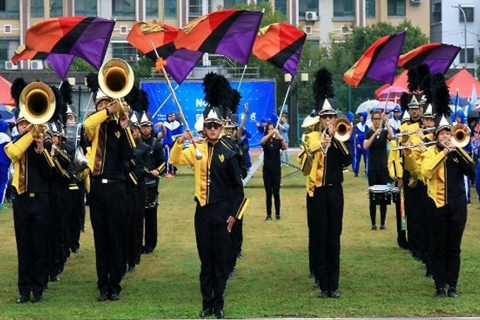
高雄市三信家商樂旗隊
三信家商樂旗隊成立於1964年，學生在就讀三信之前，均未曾學習過任何樂器或旗舞的技巧，然而在教學經驗豐富的崔華傑與教練團的精心指導，及學生課後時間的努力練習下，一年之後，個個學生都能擔綱上場，在變化的隊形中演奏各型樂器及舞動旗姿。
連續25年，三信樂旗隊不負學校的栽培，年年榮獲全國音樂比賽的優等獎或特優獎的殊榮。經常受邀在國內各地，大小慶典中參予演出，其精湛的表演除了憑添各式盛會的光采外，又深獲觀眾的喜愛與高度讚賞；更曾代表高雄市政府遠赴國外協助有關文化的、教育的城市外交使命。對於提昇台灣在國際舞台的能見度，著實貢獻不少。